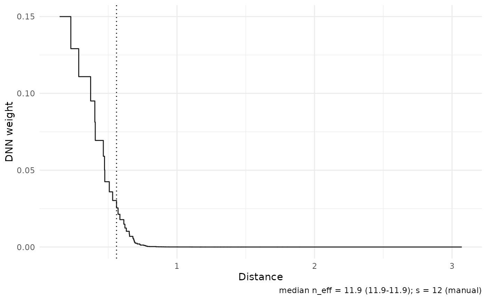

Plot DNN weight profiles, concentration, and effective kernels
Source:R/plot-weights.R
plot_weights.RdThree views of the localization weights stored on a fitted object.
type = "profile" draws weight against rank with a guide at the exact
nominal unaveraged rank-table support edge n - s + k for DNN fits (n - s + 1 in
the paper-default k = 1 case); type = "cumulative" draws the
cumulative weight share with guides at 0.5 and 0.9 and markers at the
top-1/5/10 shares; type = "kernel" draws weight against stored distance
— the effective data-driven kernel — with a guide at the rank-s radius.
The rank-s radius is a scale diagnostic, not the DNN support radius.
Usage
plot_weights(
object,
type = c("profile", "cumulative", "kernel"),
targets = NULL,
log_weights = FALSE,
candidates = "default",
...
)Arguments
- object
A fitted result object holding the weight matrix
W(stored by default;type = "kernel"additionally requires stored distances viareturn = c("W", "dx")).- type
One of
"profile","cumulative", or"kernel".- targets
Optional integer vector of target ids to display, including target-specific profiles when comparing candidates.
- log_weights
Logical (default
FALSE); for rank-domain views, drop non-positive weights and use a log10 y scale (the number of dropped weights is reported in the caption).- candidates
Candidate rows to compare for grid fits. The default
"default"preserves the stored weight-matrix display. Use"all"or a character vector of candidate ids withtype = "profile"to compare weight profiles without refitting. Exact-distance block averaging can make these profiles vary by target; the selected target profiles are shown in separate panels. Untied default profiles coincide across targets and are shown once unlesstargetsis explicitly supplied.- ...
Ignored; reserved for future options.
Details
When more than eight targets are stored, panels default to a subset
(first, median effective sample size, last); override with targets =.
Two-scale (TDNN) fits have signed weights: a dashed zero line is added
automatically whenever negative weights are shown.
Examples
if (requireNamespace("ggplot2", quietly = TRUE)) {
set.seed(1)
n <- 80
x_mat <- matrix(rnorm(n * 2), n, 2)
y_vec <- x_mat[, 1] + rnorm(n, sd = 0.3)
fit <- np_dnn(
X = x_mat, x0 = c(0, 0), Y = y_vec,
k = 1L, s = 12L, se = FALSE, return = c("W", "dx")
)
plot_weights(fit, type = "kernel")
}
